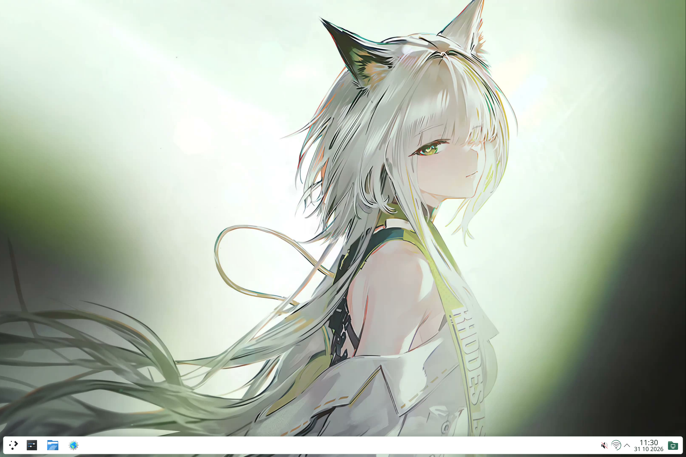
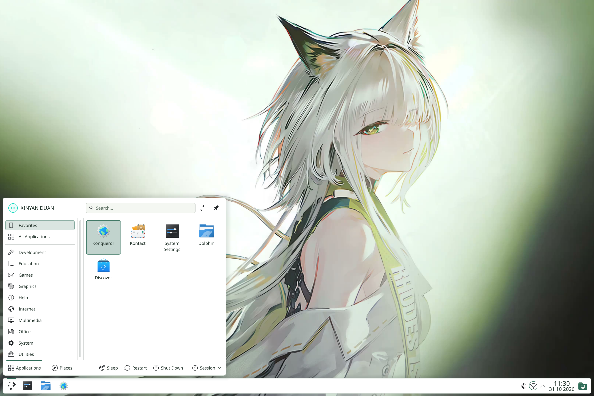
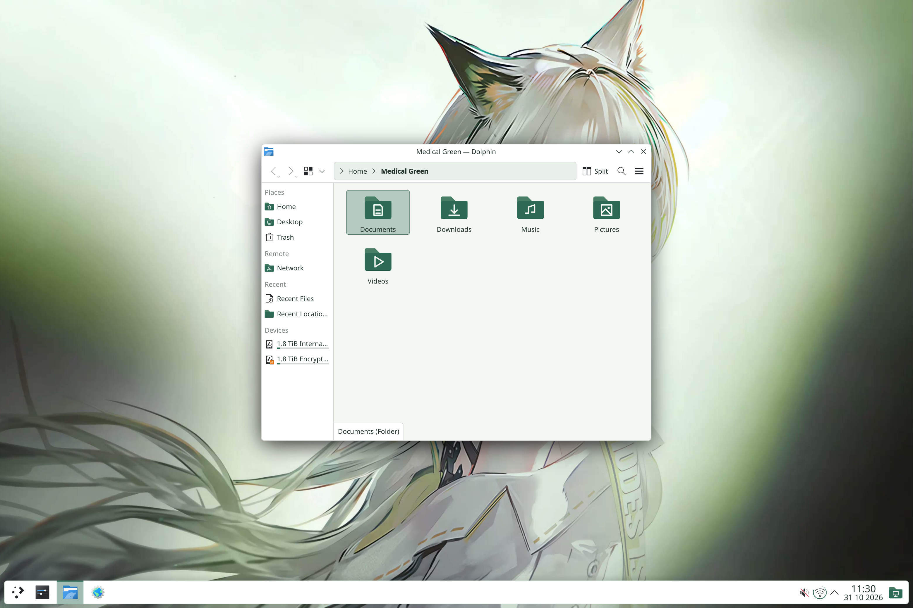
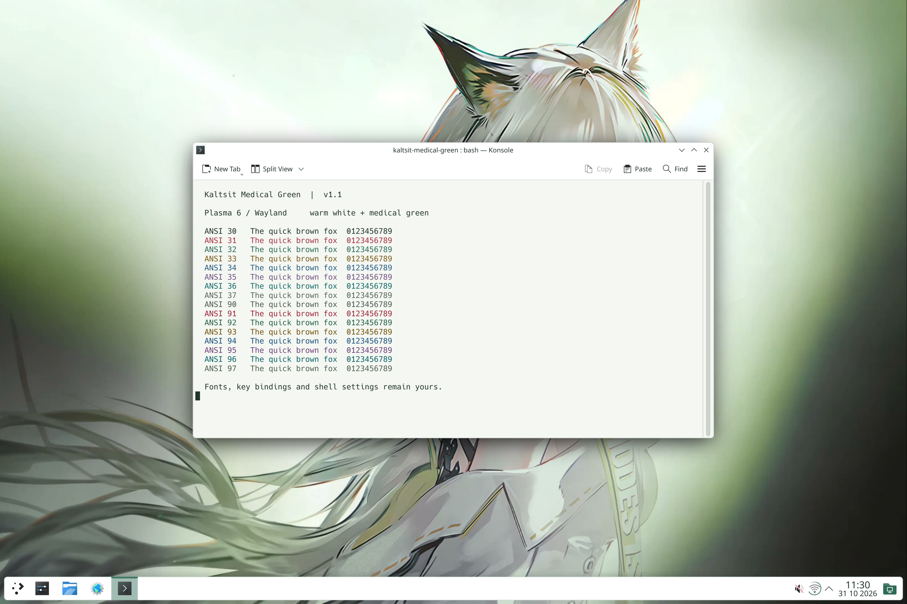
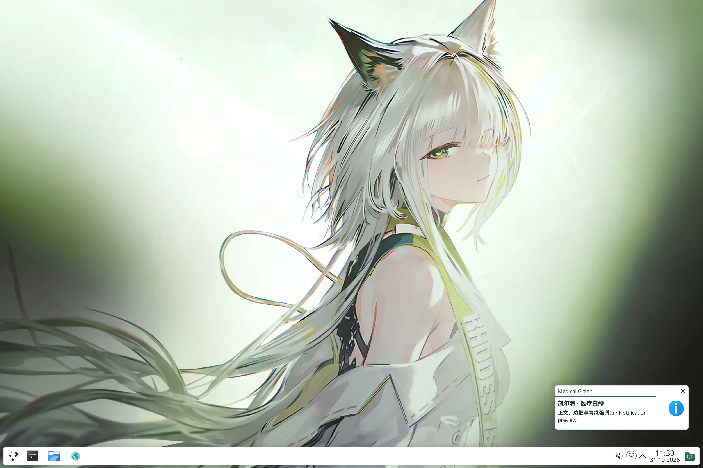
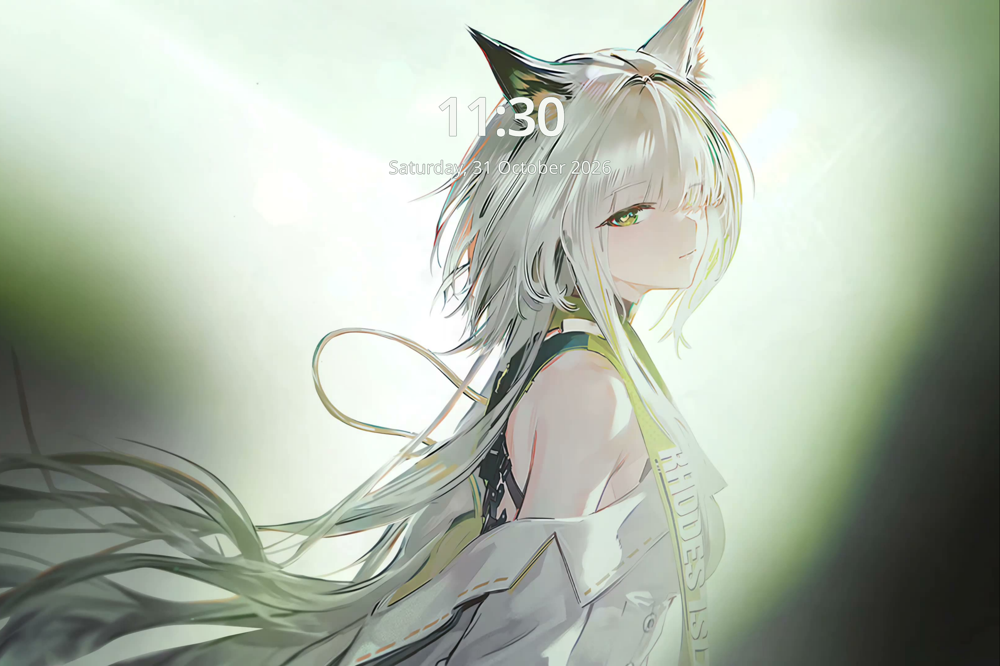
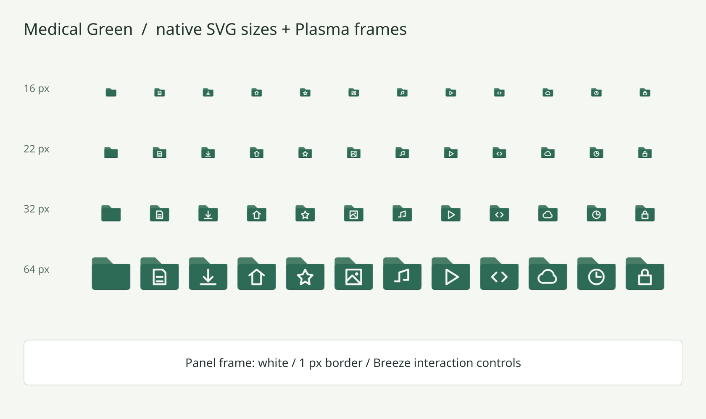

凯尔希 · 医疗白绿
1.1.0-dev.1 · 克制日常
以下为本机独立 Plasma 测试会话中的实际截图：3120×2080、175% 缩放、Wayland 软件渲染。
不是概念样图，也不是日常物理屏幕的验收截图。锁屏使用原生测试模式，没有执行认证。
桌面 · 实际 KDE 渲染
启动菜单 · 实际 KDE 渲染
Dolphin 文件管理器 · 实际 KDE 渲染
Konsole 浅色终端 · 实际 KDE 渲染
原生通知 · 实际 KDE 渲染
原生锁屏（测试模式，待机画面） · 实际 KDE 渲染
文件夹尺寸与面板背景 · Qt/KSVG 素材渲染检查
旧版 HTML 概念示意仅保留作设计参考，不代表本开发版的实际布局。
指针原作者：一球咸鱼 · 作者视频 · 完整素材署名